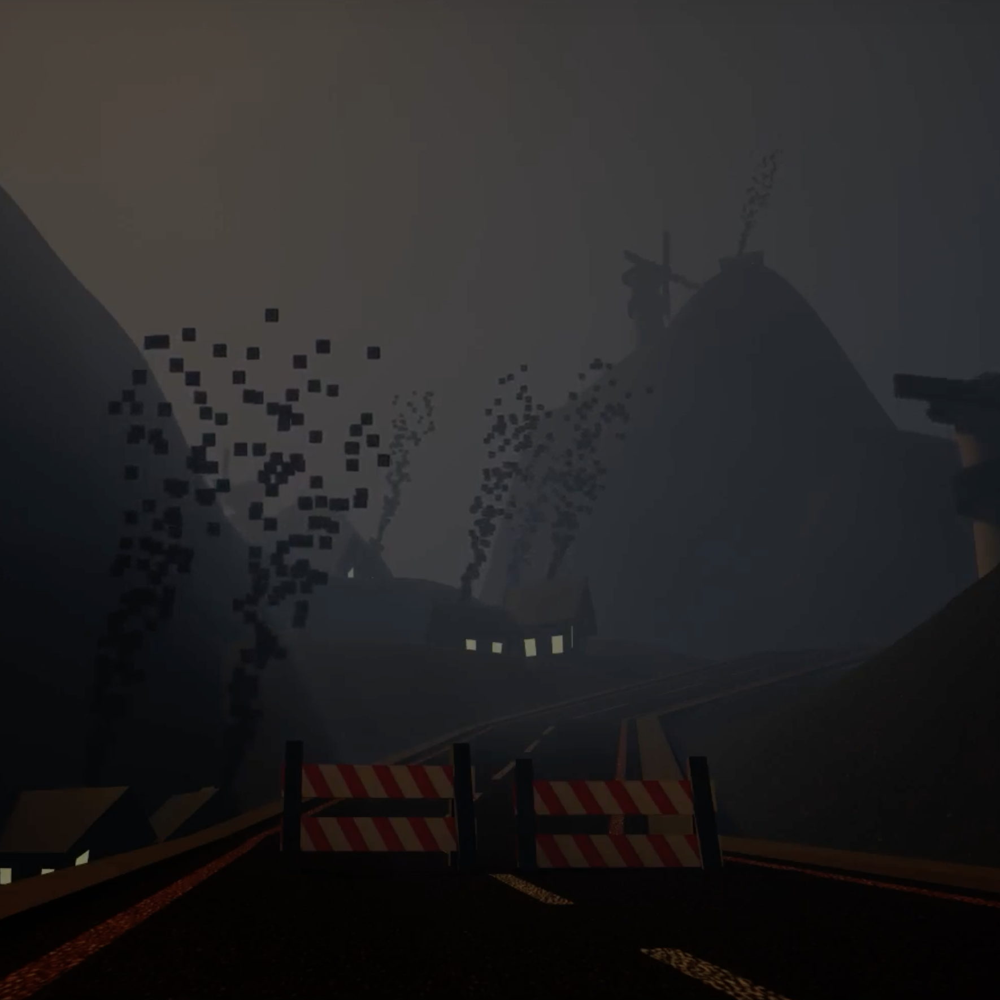

Created in Unreal Engine 5
Our team, consisting of five members, embarked on a game development project in Unreal Engine 5. Our game's central theme revolved around a driver navigating a treacherous, dark road. As the driver progresses, they encounter deer and other animals that pose threats to their journey, potentially causing them to go backward or lose control of their vehicle. To enhance the gameplay, we introduced two crucial items: a flashlight and a telephone.
The flashlight's implementation involved creating a spotlight component attached to the vehicle. When the player activates the flashlight, it dynamically increases the light intensity, illuminating the dark road and its surroundings. This improved visibility enables the player to navigate safely and detect any approaching obstacles.
The telephone served as a power-up with unique abilities. When activated, it initiated a special mode or targeting system. In this mode, the player could aim and target approaching animals on the road, causing them to despawn upon hitting. This introduced an element of skill and strategy to the game.
The inclusion of the flashlight and telephone items brought depth and variety to the gameplay experience. The player had to make critical choices regarding when and how to use these items, adding a layer of strategy to the game. The limited availability of these items added a challenge, requiring players to manage their resources wisely. Successfully picking up and using these items offered advantages in overcoming obstacles and progressing through the dark and perilous road.
In addition to the item implementations, we aimed to enhance the overall player experience with immersive animations, sound effects, and visual cues to ensure players were fully engaged in the game. The combination of a suspenseful atmosphere, wildlife obstacles, and the flashlight and telephone power-ups created a captivating and challenging experience for players in Unreal Engine 5.